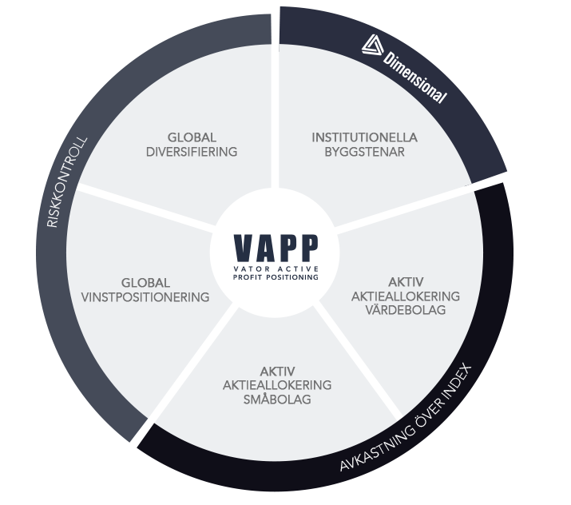

Vår investeringsfilosofi
Vår investeringsfilosofi bygger på att skapa en långsiktig och stabil värdetillväxt. Efter att ha analyserat kapitalmarknadernas utveckling sedan 1920-talet har vi identifierat vissa faktorer som systematiskt genererat en överavkastning.

Till dessa faktorer hör aktier i småbolag och värdebolag. Vi bedömer därför att en global förvaltning med fokus på värde- och småbolag har de bästa förutsättningarna för att leverera en hög riskjusterad avkastning över tid. Våra två aktivt förvaltade specialfonder, VAPP 100 och VAPP 60, har samma övergripande förvaltningsstrategi och baseras på följande principer:
- Global diversifiering.
- Aktiv vinstpositionering.
- Aktiv aktieallokering mot små- och värdebolag.
- Institutionella byggstenar.
VAPP100
VAPP 100 är en aktivt förvaltad aktiefond med en hundraprocentig aktiestrategi. Fondens målsättningen är att över tid generera en genomsnittlig årlig avkastning på mellan 7 och 9 procent. Fonden investerar globalt med viss tyngdpunkt i Sverige och med huvudsakligt fokus på värdebolag och småbolag. Fonden tillämpar en s.k. aktiv vinstpositionering, vilket innebär att de positioner som har gått bäst systematiskt realiseras. Härigenom återställs positioneringen och riskfördelningen i enlighet med den långsiktiga strategin.
LÄS MER (PDF)VAPP60
VAPP 60 är en aktivt förvaltad allokeringsfond innehållandes 60 % aktier och 40 % statsskuldväxlar. Fondens målsättning är att över tid generera en genomsnittlig årlig avkastning på mellan 5 och 7 procent. Fonden investerar globalt med viss tyngdpunkt i Sverige och med huvudsakligt fokus på värdebolag och småbolag. Fonden tillämpar en s.k. aktiv vinstpositionering vilket innebär att de positioner som har gått bäst systematiskt realiseras. Härigenom återställs positioneringen och riskfördelningen i enlighet med den långsiktiga strategin.
LÄS MER (PDF)